|
 |
| СОЛИКВА СОЛОСТАР® (SOLIQUA SOLOSTAR) insulin glargine, lixisenatide раствор д/п/к введения | ||||||||||||||||||||||||||||||||||||||||||||||||||||||||||||||||||||||||||||||||||||||||||||||||||||||||||||||||||||||||||||||||||||||||||||||||||||||||||
|
Клинико-фармакологическая группа: Комбинированный гипогликемический препарат (аналог инсулина длительного действия + агонист рецепторов глюкагоноподобного пептида) Номер и дата регистрации: ЛП-004874 от 30.05.18 Код ATX: A10AE54 |
Владелец регистрационного удостоверения: зарегистрировано Представительство: | |||||||||||||||||||||||||||||||||||||||||||||||||||||||||||||||||||||||||||||||||||||||||||||||||||||||||||||||||||||||||||||||||||||||||||||||||||||||||
Форма выпуска, состав и упаковка Раствор для п/к введения прозрачный, бесцветный или почти бесцветный.
Вспомогательные вещества: глицерол (85%), метионин (L-метионин), метакрезол (м-крезол), цинка хлорид, хлористоводородная кислота, натрия гидроксид, вода д/и. 3 мл - картриджи бесцветного стекла (3), вмонтированные в одноразовые шприц-ручки СолоСтар® - пачки картонные. Раствор для п/к введения прозрачный, бесцветный или почти бесцветный.
Вспомогательные вещества: глицерол (85%), метионин (L-метионин), метакрезол (м-крезол), цинка хлорид, хлористоводородная кислота, натрия гидроксид, вода д/и. 3 мл - картриджи бесцветного стекла (3), вмонтированные в одноразовые шприц-ручки СолоСтар® - пачки картонные. | ||||||||||||||||||||||||||||||||||||||||||||||||||||||||||||||||||||||||||||||||||||||||||||||||||||||||||||||||||||||||||||||||||||||||||||||||||||||||||
| ||||||||||||||||||||||||||||||||||||||||||||||||||||||||||||||||||||||||||||||||||||||||||||||||||||||||||||||||||||||||||||||||||||||||||||||||||||||||||
Описание препарата основано на официально утвержденной инструкции по применению и утверждено компанией-производителем для издания 2022 г. | ||||||||||||||||||||||||||||||||||||||||||||||||||||||||||||||||||||||||||||||||||||||||||||||||||||||||||||||||||||||||||||||||||||||||||||||||||||||||||
Фармакологическое действие |
Фармакокинетика |
Показания |
Режим дозирования |
Побочное действие |
Противопоказания |
Беременность и лактация |
Особые указания |
Передозировка |
Лекарственное взаимодействие |
Условия хранения и сроки годности |
Условия реализации
Фармакологическое действие
Механизм действия Препарат Соликва СолоСтар® Препарат Соликва СолоСтар® является комбинированным препаратом, в состав которого входят два гипогликемических средства с дополняющими друг друга механизмами действия: инсулин гларгин, аналог инсулина длительного действия, и ликсисенатид, агонист рецепторов глюкагоноподобного пептида-1 (ГПП1). Действие препарата направлено на снижение концентрации глюкозы в крови натощак и после приема пищи (постпрандиальной концентрации глюкозы в крови), что улучшает гликемический контроль у пациентов с сахарным диабетом 2 типа (СД2), но при этом минимизируется увеличение массы тела и риск развития гипогликемии. Инсулин гларгин Основной функцией инсулина, в т.ч. инсулина гларгин, является регуляция метаболизма глюкозы. Инсулин и его аналоги снижают концентрацию глюкозы крови, за счет увеличения потребления глюкозы периферическими тканями (в особенности, скелетными мышцами и жировой тканью) и подавления образования глюкозы в печени. Инсулин подавляет липолиз и протеолиз, а также увеличивает синтез белка. Ликсисенатид Ликсисенатид является агонистом рецепторов ГПП1. Рецептор ГПП1 является мишенью для нативного ГПП1, эндогенного гормона внутренней секреции, который потенцирует глюкозозависимую секрецию инсулина бета-клетками и подавляет секрецию глюкагона альфа-клетками поджелудочной железы. Действие ликсисенатида, подобно действию эндогенного ГПП1, осуществляется через специфическое взаимодействие с рецепторами ГПП1, включая рецепторы ГПП1, находящиеся в альфа- и бета-клетках поджелудочной железы. После приема пищи ликсисенатид активирует следующие физиологические реакции:
Ликсисенатид стимулирует секрецию инсулина в ответ на повышение концентрации глюкозы в крови. Одновременно подавляется секреция глюкагона. Кроме этого, ликсисенатид замедляет опорожнение желудка, уменьшая за счет этого скорость абсорбции глюкозы из пищи и ее поступление в системный кровоток. Было показано, что ликсисенатид в изолированных островках поджелудочной железы человека сохраняет функцию бета-клеток и предотвращает их гибель (апоптоз). Фармакодинамические свойства Препарат Соликва СолоСтар® Комбинация инсулина гларгин и ликсисенатида не оказывает влияния на фармакологическое действие инсулина гларгин. Влияние комбинации инсулина гларгин и ликсисенатида на фармакологическое действие ликсисенатида в клинических исследованиях I фазы не изучалось. Аналогично относительно постоянному профилю "концентрация/время" без выраженных пиков в течение 24 ч при введении только инсулина гларгин, при введении комбинации инсулин гларгин + ликсисенатид профиль "скорость утилизации глюкозы/время" был схожим, без выраженных пиков. Длительность действия инсулинов, включая препарат Соликва СолоСтар®, может варьировать как у разных пациентов, так и у одного и того же пациента. Инсулин гларгин В клинических исследованиях инсулина гларгин (100 ЕД/мл) гипогликемическое действие в/в вводимого инсулина гларгин было приблизительно таким же, как и у человеческого инсулина (при в/в введении обоих препаратов в одинаковых дозах). Ликсисенатид В 28-дневном плацебо-контролируемом исследовании у пациентов с СД2 по оценке влияния ликсисенатида в дозах 5-20 мкг 1 или 2 раза в сутки на концентрацию глюкозы в крови после приема стандартного завтрака, ликсисенатид в дозах 10 мкг и 20 мкг 1 или 2 раза в сутки улучшал гликемический контроль за счет снижения как постпрандиальной (после приема пищи) концентрации глюкозы в крови, так и концентрации глюкозы в крови натощак. Ликсисенатид, вводимый в этом исследовании утром в дозе 20 мкг 1 раз в сутки, поддерживал статистически значимое снижение постпрандиальной концентрации глюкозы в крови после завтрака, обеда и ужина. Влияние на постпрандиальную концентрацию глюкозы в крови В 4-недельном исследовании в комбинации с метформином и в 8-недельном исследовании в комбинации с инсулином гларгин с/без метформина, ликсисенатид в дозе 20 мкг 1 раз в сутки, вводимый перед завтраком у пациентов с СД2, показал снижение постпрандиальной концентрации глюкозы в крови (кривая "концентрация глюкозы/время 0:30-4:30 ч") после пробного завтрака. Количество пациентов с 2-часовой постпрандиальной концентрацией глюкозы ниже 140 мг/дл (7.77 ммоль/л) составляло 69.3% после 28 дней лечения и 76.1% после 56 дней лечения. Влияние на секрецию инсулина У пациентов с СД2 монотерапия ликсисенатидом по сравнению с плацебо восстанавливает первую фазу секреции инсулина в глюкозозависимом режиме, увеличивая ее в 2.8 раз (90% доверительный интервал, 2.5-3.1) и увеличивает вторую фазу секреции инсулина в 1.6 раз (90% доверительный интервал 1.4-1.7) (измерялось по AUC). Влияние на опорожнение желудка После стандартизированного тестового приема меченной изотопом пищи, ликсисенатид замедлял опорожнение желудка, снижая за счет этого скорость постпрандиальной абсорбции глюкозы. У пациентов с СД2 при монотерапии ликсисенатидом эффект замедления опорожнения желудка сохранялся после 28 дней лечения. Влияние на секрецию глюкагона Ликсисенатид в дозе 20 мкг 1 раз в сутки в монотерапии демонстрировал снижение постпрандиальной концентрации глюкагона по сравнению с исходом после тестового приема пищи у пациентов с СД2. В плацебо-контролируемом гипогликемическом клэмп-исследовании, проведенном у здоровых добровольцев, по оценке однократного введения ликсисенатида в дозе 20 мкг на секрецию глюкагона, реакция секреции глюкагона в ответ на снижение концентрации глюкозы в крови при гипогликемических состояниях сохранялась, несмотря на присутствие эффективных концентраций ликсисенатида в плазме крови. Влияние на электрофизиологию сердца (интервал QTc) Влияние ликсисенатида на реполяризацию сердца было изучено в исследовании интервала QTc (в дозе, в 1.5 раза превышающей рекомендуемую поддерживающую дозу), которое показало отсутствие какого-либо влияния ликсисенатида на реполяризацию желудочков. Влияние на ЧСС В плацебо-контролируемых клинических исследованиях III фазы было показано отсутствие повышения средних значений ЧСС. Клиническая эффективность Эффективность и безопасность применения препарата Соликва СолоСтар® были изучены в трех рандомизированных, контролируемых клинических исследованиях с активным контролем у пациентов с СД2:
Клиническое исследование LixiLan-O В рандомизированном открытом 30-недельном клиническом исследовании (LixiLan-O) с активным контролем, проведенном у пациентов с СД2, не получавших ранее терапию инсулином и с недостаточным гликемическим контролем при применении пероральных гипогликемических препаратов, оценивались эффективность и безопасность препарата Соликва СолоСтар® (n=468) в сравнении с инсулином гларгин (n=466) и ликсисенатидом (n=233). При добавлении к лечению препарата Соликва СолоСтар® 74% (n=345) пациентов к 30-й неделе достигли значений гликированного гемоглобина A1c (HbA1c) <7%, по сравнению с 59% (n=277) пациентов при добавлении только инсулина гларгин и 33% (n=77) пациентов при добавлении только ликсисенатида. Снижение средних значений HbA1с к 30-й неделе у пациентов, получавших препарат Соликва СолоСтар®, составило -1.6%, а у пациентов в группах лечения инсулином гларгин и ликсисенатидом оно составляло -1.3% и -0.9% соответственно. Средние значения концентрации глюкозы в плазме крови натощак у пациентов, получавших препарат Соликва СолоСтар®, к концу исследования снизились на 3.46 ммоль/л, а при добавлении инсулина гларгин или ликсисенатида на 3.27 ммоль/л и 1.5 ммоль/л соответственно. Снижение средних значений постпрандиальной концентрации глюкозы в крови (через 2 ч после приема пищи) у пациентов к 30-й неделе при добавлении к лечению препарата Соликва СолоСтар® составило -5,68 ммоль/л, по сравнению с -3.31 ммоль/л при добавлении только инсулина гларгин и -4.58 ммоль/л при добавлении только ликсисенатида. К концу 30-недельного периода среднее значение изменения массы тела составило у пациентов, получавших препарат Соликва СолоСтар®, -0.3 кг, а инсулин гларгин +1.1 кг. При добавлении ликсисенатида изменение массы тела составило -2.3 кг. Клиническое исследование (LixiLan-L) (переход с базального инсулина) В рандомизированном, 30-недельном, контролируемом, открытом, многоцентровом клиническом исследовании (LixiLan-L) с активным контролем оценивалась эффективность и безопасность препарата Соликва СолоСтар® в сравнении с инсулином гларгин. В исследование было включено 736 пациентов с СД2 с недостаточным гликемическим контролем при терапии пероральными гипогликемическими препаратами в комбинации с базальным инсулином. При применении препарата Соликва СолоСтар® 54.9% пациентов (n=201) к 30-й неделе достигли HbA1c <7%, по сравнению с 29.6% пациентов (n=108) в группе лечения только инсулином гларгин. Среднее значение снижения HbA1C к 30-й неделе у пациентов, получавших препарат Соликва СолоСтар®, составило -1.1%, а у пациентов в группе лечения инсулином гларгин снижение HbA1C составило -0.6%. Концентрация глюкозы в плазме крови натощак у пациентов, получавших препарат Соликва СолоСтар®, к концу исследования снизилась на 0.35 ммоль/л, а при применении инсулина гларгин на 0.47 ммоль/л. Среднее значение снижения постпрандиальной концентрации глюкозы в крови (через 2 ч после приема пищи) у пациентов к 30-й неделе при лечении препаратом Соликва СолоСтар® составило -4.72 ммоль/л, по сравнению с -1.39 ммоль/л в группе инсулина гларгин. К концу 30-недельного периода среднее изменение массы тела у пациентов, получавших препарат Соликва СолоСтар®, составило -0.7 кг, а у пациентов, получавших инсулин гларгин - +0.7 кг. Таким образом, лечение препаратом Соликва СолоСтар® вызывало клинически и статистически значимое улучшение показателя HbA1c. Причем, достижение более низких значений HbA1c и большего снижения HbA1c при применении препарата Соликва СолоСтар® не увеличивало частоту развития гипогликемии по сравнению с монотерапией инсулином гларгин. Клиническое исследование (LixiLan-G) (переход с терапии агонистами рецепторов ГПП1) В рандомизированном, 26-недельном, открытом, многоцентровом клиническом исследовании (LixiLan-G) с активным контролем оценивалась эффективность и безопасность препарата Соликва СолоСтар® в сравнении с агонистами рецепторов ГПП1. В исследование было включено 514 пациентов с СД2 с недостаточным гликемическим контролем при терапии пероральными гипогликемическими препаратами в комбинации с агонистами рецепторов ГПП1. При применении препарата Соликва СолоСтар® 61.9% пациентов (n=156) к 30-й неделе достигли HbA1c <7%, по сравнению с 25.7% пациентов (n=65) в группе лечения агонистами рецепторов ГПП1. Среднее значение снижения HbA1C к 30-й неделе у пациентов, получавших препарат Соликва СолоСтар®, составило -1.0%, а у пациентов в группе лечения агонистами рецепторов ГПП1 снижение HbA1C составило -0.4%. Концентрация глюкозы в плазме крови натощак у пациентов, получавших препарат Соликва СолоСтар®, к концу исследования снизилась на 2.28 ммоль/л, а при применении агонистов рецепторов ГПП1 на 0.60 ммоль/л. Среднее значение снижения постпрандиальной концентрации глюкозы в крови (через 2 ч после приема пищи) у пациентов к 30-й неделе при лечении препаратом Соликва СолоСтар® составило -4.0 ммоль/л, по сравнению с -1.1 ммоль/л в группе агонистов рецепторов ГПП1. К концу 30-недельного периода среднее изменение массы тела у пациентов, получавших препарат Соликва СолоСтар®, составило +1.9 кг, а у пациентов, получавших агонисты рецепторов ГПП1, -1.1 кг.
В рамках исследования LixiLan-G была доказана целесообразность сочетанного применения препарата Соликва СолоСтар® и ингибиторов НГЛТ2 (подгруппа 26 пациентов). Данные, полученные в ходе исследования, указывают на то, что назначение препарата Соликва СолоСтар® пациентам, у которых не удается достичь надлежащего контроля СД2 при применении ингибиторов НГЛТ2, ведет к благоприятному изменению уровня HbA1c в отличие от препаратов сравнения. У пациентов, принимавших ингибиторы НГЛТ2, и пациентов, не принимавших ингибиторы НГЛТ2, не наблюдалось повышенного риска развития гипогликемии и существенной разницы в совокупном профиле безопасности. Исследования влияния ликсисенатида и инсулина гларгин на сердечно-сосудистую систему (ССС) Влияние на развитие осложнений со стороны ССС терапии инсулином гларгин было установлена в клиническом исследовании ORIGIN, а ликсисенатидом - в клиническом исследовании ELIXA. Исследований влияния терапии фиксированной комбинации инсулина гларгин и ликсисенатида на ССС не проводилось. Инсулин гларгин. Клиническое исследование ORIGIN (Outcome Reduction with Initial Glargine Intervention) было открытым, рандомизированным исследованием, проведенным у 12537 пациентов, терапии препаратом Лантус® (инсулин гларгин 100 ЕД/мл) в сравнении со стандартной гипогликемической терапией в отношении времени развития первого крупного сердечно-сосудистого осложнения (КССО). КССО определялось, как композитная конечная точка: сердечно-сосудистая смерть, нефатальный инфаркт миокарда, нефатальный инсульт. Частота развития КССО в группах лечения препаратом Лантус® и группах стандартной гипогликемической терапии была сопоставимой [отношение рисков (95% доверительный интервал) 1.02 (0.94, 1.11)]. В клиническом исследовании ORIGIN средняя частота развития рака (всех видов) [отношение рисков (95% доверительный интервал) 0.99 (0.88, 1.11)] или смерти от рака [отношение рисков (95% доверительный интервал) 0.94 (0.77, 1.15)] была сопоставимой между группами лечения. Ликсисенатид. Клиническое исследование ELIXA было рандомизированным, двойным слепым, плацебо-контролируемым, многонациональным исследованием, в котором проводилась оценка осложнений со стороны ССС во время лечения ликсисенатидом у пациентов c СД2 (n=6068) после недавно перенесенного острого коронарного синдрома. Первичной конечной точкой эффективности было время до первого возникновения любого из следующих событий, положительно расцененных Комитетом по оценке сердечно-сосудистых событий: сердечно-сосудистая смерть, нефатальный инфаркт миокарда, нефатальный инсульт или госпитализация по поводу нестабильной стенокардии. Вторичные сердечно-сосудистые конечные точки включали комбинацию первичной конечной точки либо с госпитализацией по поводу сердечной недостаточности, либо с реваскуляризацией коронарных артерий. Также заранее запланированной вторичной конечной точкой было изменение отношения альбумин/креатинин в моче к 108-й неделе. Частота возникновения событий из первичной конечной точки была сопоставимой в группе ликсисенатида и в группе плацебо: отношение рисков для ликсисенатида против плацебо составляло 1.017, с двусторонним 95% доверительным интервалом, составляющим 0.886-1.168. Одинаковые проценты между группами лечения наблюдались для вторичных конечных точек и для всех отдельных компонентов композитных конечных точек. Проценты пациентов, госпитализированных по поводу сердечной недостаточности, составляли 4.0% и 4.2% в группах ликсисенатида и плацебо, соответственно [отношение рисков (95% доверительный интервал) 0.96 (0.75, 1.23)]. В группе ликсисенатида по сравнению с группой плацебо наблюдалось меньшее увеличение отношения альбумин/креатинин в моче к неделе 108, по сравнению с исходом: -10.04±3.53%; 95% доверительный интервал составлял -16.95%, -3.13%. Фармакокинетика
Препарат Соликва СолоСтар® Соотношение инсулина гларгин и ликсисенатида в препарате Соликва СолоСтар® не оказывало значимого влияния на фармакокинетику инсулина гларгин и ликсисенатида. По сравнению с монотерапией ликсисенатидом, при введении препарата Соликва СолоСтар® Cmax ликсисенатида в плазме крови была ниже, в то время как AUC была в целом сопоставимой. Эти различия в фармакокинетике ликсисенатида при его введении в составе препарата Соликва СолоСтар® и при введении только ликсисенатида не являлись клинически значимыми. Всасывание Препарат Соликва СолоСтар®. После п/к введения комбинации инсулин гларгин/ликсисенатид пациентам с сахарным диабетом 1 типа, инсулин гларгин показал отсутствие пиковых подъемов его концентрации в плазме крови. Поступление инсулина гларгин в системный кровоток находилось в диапазоне 86-101% по сравнению с введением одного инсулина гларгин. После п/к введения комбинации инсулин гларгин/ликсисенатид пациентам с сахарным диабетом 1 типа, медиана времени до достижения максимальной концентрации в плазме крови (Tmax) ликсисенатида находилась в диапазоне 2.5-3.0 ч. После подкожного введения комбинации инсулин гларгин/ликсисенатид наблюдалось небольшое снижение Cmax ликсисенатида на 22-34% по сравнению с раздельным одновременным введением инсулина гларгин и ликсисенатида, что не является клинически значимым. Отсутствовали клинически значимые различия в скорости абсорбции при введении ликсисенатида подкожно в область передней стенки живота, бедра или плеча. Распределение Ликсисенатид. У человека ликсисенатид в умеренной степени (на 55%) связывается с белками плазмы крови. Метаболизм и выведение Инсулин гларгин. Исследование метаболизма у человека при введении только инсулина гларгин показывает, что инсулин гларгин частично метаболизируется с карбоксильного конца бета-цепи в подкожном депо с образованием двух активных метаболитов с активностью in vitro, сходной с человеческим инсулином: М1 (21A-Gly-инсулин) и М2 (21A-Gly-дез-30B-Thr-инсулин). Неизмененный инсулин гларгин и продукты его деградации также присутствуют в системном кровотоке. Ликсисенатид. Являясь пептидом, ликсисенатид выводится путем гломерулярной фильтрации с последующей реабсорбцией в почечных канальцах и метаболической деградации, приводящей к образованию более мелких пептидов и аминокислот, которые повторно вступают в белковый обмен. Фармакокинетика у особых групп пациентов Пациенты с почечной недостаточностью Открытое исследование оценивало фармакокинетику ликсисенатида 5 мкг при однократном введении у лиц с различной степенью нарушения функции почек [которая вычислялась с помощью формулы Кокрофта-Голта для расчета клиренса креатинина (КК)] по сравнению со здоровыми лицами. Не наблюдалось значимых различий в средних значениях Cmax и AUC ликсисенатида при нормальной функции почек и почечной недостаточности легкой степени тяжести (КК 60-90 мл/мин). У пациентов с почечной недостаточностью средней степени тяжести (КК 30-60 мл/мин) AUC ликсисенатида увеличивалась приблизительно на 51%, а у пациентов с почечной недостаточностью тяжелой степени (КК 15-30 мл/мин) AUC ликсисенатида увеличивалась приблизительно на 87%. Пациенты с печеночной недостаточностью
Т.к. ликсисенатид выводится, главным образом, почками, фармакокинетических исследований у пациентов с острым или хроническим нарушением функции печени не проводилось. Не ожидается, что нарушение функции печени способно повлиять на фармакокинетику ликсисенатида. Возраст, раса, пол и масса тела
Влияние возраста, расы и пола на фармакокинетику инсулина гларгин до настоящего времени не оценивалось. В контролируемых клинических исследованиях у взрослых, проведенных с инсулином гларгин (100 ЕД/мл), анализ подгрупп, проведенный по возрасту, расовой и половой принадлежности, не показал различий в отношении безопасности и эффективности.
По данным популяционного фармакокинетического анализа возраст, масса тела, раса и пол не оказывали клинически значимого влияния на фармакокинетику ликсисенатида.
Влияние индекса массы тела (ИМТ) на фармакокинетику препарата Соликва Солостар® до настоящего времени не оценивалось. Показания
В комбинации с метформином в сочетании или без сочетания с ингибиторами НГЛТ2 (натрий-глюкозных ко-транспортеров 2 типа) с целью улучшения гликемического контроля у взрослых пациентов с сахарным диабетом 2 типа (в качестве дополнения к диетотерапии и повышенной физической нагрузке) при неэффективности:
Режим дозирования
Для удобства индивидуального подбора дозы препарат Соликва СолоСтар® выпускается в двух шприц-ручках, предоставляющих выбор различных доз. Различия между этими двумя шприц-ручками заключаются в диапазоне доз действующих веществ в шприц-ручках (см. ниже).
Во избежание ошибочного введения препарата из другой шприц-ручки (с другой дозировкой), следует удостовериться в том, что в рецепте указана соответствующая назначению врача шприц-ручка Соликва СолоСтар®: шприц-ручка Соликва СолоСтар® (10-40) или шприц-ручка Соликва СолоСтар® (30-60). Максимальная суточная доза препарата Соликва СолоСтар® составляет 60 единиц (60 ЕД инсулина гларгин и 20 мкг ликсисенатида). Препарат Соликва СолоСтар® вводят п/к 1 раз/сут в течение 1 ч перед любым приемом пищи. Предпочтительно, чтобы прандиальная (перед приемом пищи) инъекция препарата Соликва СолоСтар® проводилась ежедневно перед одним и тем же приемом пищи, выбранным, как наиболее подходящий для пациента. В случае пропуска введения дозы препарата Соликва СолоСтар®, ее следует ввести в течение 1 ч перед следующим приемом пищи. Дозу препарата Соликва СолоСтар® следует подбирать индивидуально на основании клинического ответа и титровать, исходя из потребности пациента в инсулине. Доза ликсисенатида увеличивается или уменьшается вместе с дозой инсулина гларгин, а также зависит от того, какая из вышеуказанных шприц-ручек используется. Коррекцию дозы или изменение времени введения препарата Соликва СолоСтар® следует проводить только под врачебным наблюдением с соответствующим мониторингом концентрации глюкозы в крови (см. раздел "Особые указания"). Начало терапии препаратом Соликва СолоСтар® Начальная доза препарата Соликва СолоСтар® Перед началом терапии препаратом Соликва СолоСтар® следует прекратить терапию любым другим базальным инсулином, агонистами рецепторов ГПП1, пероральными гипогликемическими средствами (кроме метформина и ингибиторов НГЛТ2). Начальная доза препарата Соликва СолоСтар® выбирается, исходя из предшествующего лечения гипогликемическими препаратами, и не должна превышать начальную дозу ликсисенатида 10 мкг. Начальная доза препарата Соликва СолоСтар®
* Если применялся другой базальный инсулин:
Титрование дозы препарата Соликва СолоСтар® Препарат Соликва СолоСтар® следует дозировать в соответствии с индивидуальной потребностью пациента в инсулине. С целью улучшения гликемического контроля рекомендуется корректировать дозу препарата на основании определения концентрации глюкозы в плазме крови натощак. При переходе на терапию препаратом Соликва СолоСтар® и в последующие недели рекомендуется проведение тщательного мониторинга концентрации глюкозы в крови.
Способ введения Препарат Соликва СолоСтар® следует вводить в подкожно-жировую клетчатку передней брюшной стенки, плеч или бедер. С целью уменьшения риска развития липодистрофии место инъекций следует менять при каждой новой инъекции в пределах одной из рекомендуемых областей для введения. На скорость абсорбции и, соответственно, на начало и продолжительность действия могут влиять физическая нагрузка и другие изменяющиеся факторы, такие как стресс, сопутствующие заболевания, или изменения одновременно принимаемых лекарственных препаратов или диеты. Препарат Соликва СолоСтар® нельзя вводить в/в и в/м. После первого введения препарата шприц-ручкой можно пользоваться в течение 4 недель, храня при температуре ниже 25°С в защищенном от света месте (не замораживать и не в холодильнике). Более подробную информацию по проведению инъекций с помощью шприц-ручки Соликва СолоСтар® 10-40 см. далее в "Инструкции по использованию шприц-ручки Соликва СолоСтар® 10-40 (для доз 10-40 единиц препарата в сутки)". Более подробную информацию по проведению инъекций с помощью шприц-ручки Соликва СолоСтар® 30-60 см. далее в "Инструкции по использованию шприц-ручки Соликва СолоСтар® 30-60 (для доз 30-60 единиц препарата в сутки)". Применение в особых клинических группах пациентов Дети и подростки до 18 лет. Безопасность и эффективность препарата Соликва СолоСтар® у детей и подростков младше 18 лет не установлена. Пациенты в возрасте ≥ 65 лет. Препарат Соликва СолоСтар® можно применять у пациентов в возрасте ≥ 65 лет. Доза должна корректироваться индивидуально, исходя из мониторинга концентраций глюкозы в крови. Опыт применения препарата у пациентов в возрасте ≥ 75 лет ограничен. Пациенты с печеночной недостаточностью. Влияние печеночной недостаточности на фармакокинетику препарата Соликва СолоСтар® не изучалось. Коррекции дозы ликсисенатида у пациентов с печеночной недостаточностью не требуется. У пациентов с печеночной недостаточностью потребность в инсулине может уменьшаться вследствие снижения способности к глюконеогенезу и замедления метаболизма инсулина. У пациентов с печеночной недостаточностью может потребоваться частый мониторинг концентрации глюкозы в крови и коррекция дозы препарата Соликва СолоСтар®. Пациенты с почечной недостаточностью. Отсутствует терапевтический опыт применения ликсисенатида у пациентов с почечной недостаточностью тяжелой степени (КК менее 30 мл/мин) и терминальной почечной недостаточностью, поэтому применение ликсисенатида у этих групп пациентов противопоказано. У пациентов с почечной недостаточностью легкой и средней степени тяжести может снижаться потребность в инсулине вследствие замедления метаболизма инсулина. У пациентов с почечной недостаточностью может потребоваться частый мониторинг концентрации глюкозы в крови и коррекция дозы препарата Соликва СолоСтар®.
В шприц-ручках Соликва СолоСтар® содержится инсулин гларгин и ликсисенатид в фиксированном соотношении. Лекарственная комбинация в шприц-ручке Соликва СолоСтар® 10-40 предназначена для ежедневного введения от 10 до 40 ЕД инсулина гларгин и от 5 мкг до 20 мкг ликсисенатида.
Сохраните эту инструкцию для обращения к ней за справками в будущем. Важная информация
Дополнительные средства, которые Вам потребуются:
Указание мест для проведения инъекций 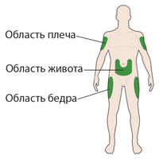 Внешний вид шприц-ручки Соликва СолоСтар® 10-40 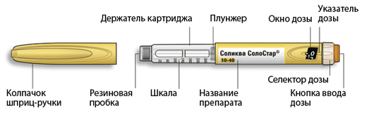 * Вы можете не видеть плунжер, пока не введете несколько доз. ШАГ 1: Проверка шприц-ручки Выньте новую шприц-ручку из холодильника не менее чем за 1 час до проведения инъекции. Введение холодного препарата является более болезненным. A. Проверка названия и срока годности на этикетке шприц-ручки. Удостоверьтесь в том, что у Вас правильный (нужный Вам) препарат. Шприц-ручка Соликва СолоСтар® 10-40 имеет желтый цвет.
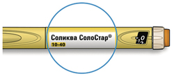 B. Снимите колпачок со шприц-ручки. 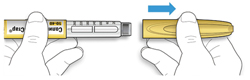 C. Проверьте прозрачность препарата.
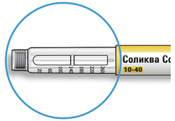 D. Протрите резиновую герметизирующую пробку спиртовой салфеткой. 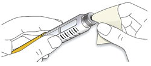 Если у Вас имеются другие шприц-ручки
ШАГ 2: Присоединение новой иглы
A. Возьмите новую иглу и удалите защитное покрытие. B. Держите иглу прямо перед шприц-ручкой и прикрутите ее на шприц-ручку до фиксации. Не прилагайте чрезмерных усилий при прикручивании иглы. 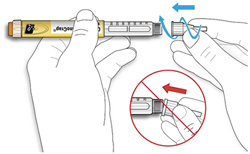 C. Снимите наружный колпачок иглы. Сохраните его для использования в дальнейшем. 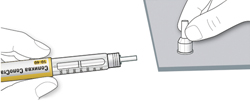 D. Снимите внутренний колпачок с иглы и выбросьте его. 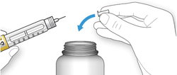 Обращение с иглами
ШАГ 3: Проведите тест на безопасность Обязательно перед каждой инъекцией проводите тест на безопасность - он проводится для проверки того, что шприц-ручка и игла работают надлежащим образом, а также для того чтобы быть уверенным, что Вы введете правильную дозу препарата. A. Наберите 2 единицы препарата путем вращения селектора дозы до того момента, когда указатель дозы не окажется на отметке 2. 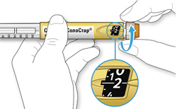 B. Нажмите до упора на кнопку ввода дозы.
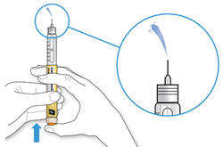 Если жидкость не показывается из кончика иглы:
Если Вы видите пузырьки воздуха
ШАГ 4: Набор дозы
A. Удостоверьтесь в том, что игла присоединена и доза установлена на "0". 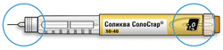 A. Вращайте селектор дозы до тех пор, пока указатель дозы не окажется на одной линии с нужной Вам дозой.
Как читать показания окна дозы
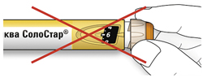 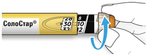 Единицы препарата в шприц-ручке
ШАГ 5: Введение дозы Если Вы испытываете затруднения при нажатии на кнопку ввода дозы, не применяйте силу, так как это может повредить шприц-ручку. За помощью обратитесь к ШАГУ 5 E ниже. A. Выберите место для инъекции, как показано на рисунке выше. B. Введите иглу в кожу, как Вам было показано Вашим медицинским работником.
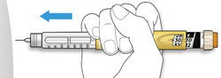 C. Поместите большой палец на кнопку ввода дозы. Затем нажмите до упора и удерживайте в этом положении.
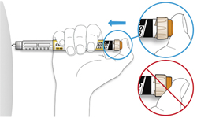 D. Нажимайте на кнопку ввода дозы, и когда вы увидите "0" в окне дозы, медленно досчитайте до 10.
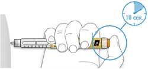 E. После удерживания кнопки ввода дозы и счета до 10 отпустите кнопку ввода. Затем извлеките иглу из кожи. Если возникают затруднения при нажатии на кнопку ввода
ШАГ 6: Удаление иглы
A. Возьмите наружный колпачок иглы двумя пальцами. Держите иглу прямо и введите ее в наружный колпачок иглы.
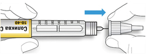 B. Крепко обхватите широкую часть наружного колпачка иглы. Прокрутите Вашу шприц-ручку несколько раз другой рукой, чтобы снять иглу.
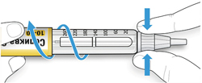 C. Выбросьте использованную иглу в резистентный к проколам контейнер (см. раздел "Утилизация шприц-ручки") 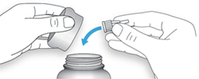 D. Закройте шприц-ручку ее колпачком
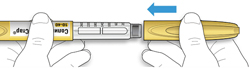 Срок использования
Как хранить шприц-ручку Перед первым использованием
После первого использования
Обращение со шприц-ручкой Обращайтесь со шприц-ручкой с осторожностью.
Предохраняйте шприц-ручку от попадания пыли и грязи.
Утилизация шприц-ручки
В шприц-ручках Соликва СолоСтар® содержится инсулин гларгин и ликсисенатид в фиксированном соотношении. Лекарственная комбинация в шприц-ручке Соликва СолоСтар® 30-60 предназначена для ежедневного введения от 30 до 60 ЕД инсулина гларгин и от 10 мкг до 20 мкг ликсисенатида.
Сохраните эту инструкцию для обращения к ней за справками в будущем. Важная информация
Дополнительные средства, которые Вам потребуются:
Указание мест для проведения инъекций Внешний вид шприц-ручки Соликва СолоСтар® 30-60 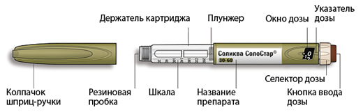 * Вы можете не видеть плунжер, пока не введете несколько доз. ШАГ 1: Проверка шприц-ручки Выньте новую шприц-ручку из холодильника не менее чем за 1 час до проведения инъекции. Введение холодного препарата является более болезненным. А. Проверка названия и срока годности на этикетке шприц-ручки.
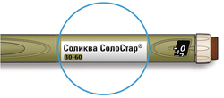 В. Снимите колпачок со шприц-ручки. 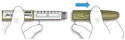 С. Проверьте прозрачность препарата.
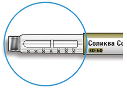 D. Протрите резиновую герметизирующую пробку спиртовой салфеткой. 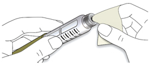 Если у Вас имеются другие шприц-ручки
ШАГ 2: Присоединение новой иглы
A. Возьмите новую иглу и удалите защитное покрытие. B. Держите иглу прямо перед шприц-ручкой и прикрутите ее на шприц-ручку до фиксации. Не прилагайте чрезмерных усилий при прикручивании иглы. 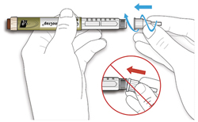 C. Снимите наружный колпачок иглы. Сохраните его для использования в дальнейшем. 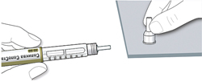 D. Снимите внутренний колпачок с иглы и выбросьте его. 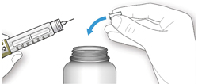 Обращение с иглами
ШАГ 3: Проведите тест на безопасность Обязательно перед каждой инъекцией проводите тест на безопасность – он проводится для проверки того, что шприц-ручка и игла работают надлежащим образом, а также для того чтобы быть уверенным, что Вы введете правильную дозу препарата. A. Наберите 2 единицы препарата путем вращения селектора дозы до того момента, когда указатель дозы не окажется на отметке 2. 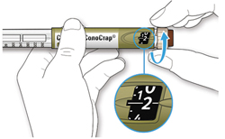 B. Нажмите до упора на кнопку проведения инъекции.
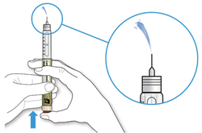 Если жидкость не показывается из кончика иглы:
Если Вы видите пузырьки воздуха
ШАГ 4: Набор дозы
A. Удостоверьтесь в том, что игла присоединена и доза установлена на "0". 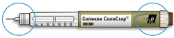 B. Вращайте селектор дозы до тех пор, пока указатель дозы не окажется на одной линии с нужной Вам дозой.
Как читать показания окна дозы
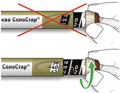 Единицы препарата в шприц-ручке
ШАГ 5: Введение дозы
A. Выберите место для инъекции, как показано на рисунке выше. B. Введите иглу в кожу, как Вам было показано Вашим медицинским работником.
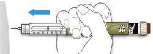 C. Поместите большой палец на кнопку ввода дозы. Затем нажмите до упора и удерживайте в этом положении.
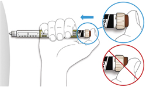 D. Нажимайте на кнопку ввода дозы, и когда вы увидите "0" в окне дозы, медленно досчитайте до 10.
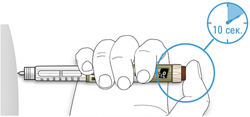 E. После удерживания кнопки ввода дозы и счета до 10 отпустите кнопку ввода. Затем извлеките иглу из кожи. Если возникают затруднения при нажимании на кнопку ввода
ШАГ 6: Удаление иглы
A. Возьмите наружный колпачок иглы двумя пальцами. Держите иглу прямо и введите ее в наружный колпачок иглы.
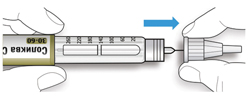 B. Крепко обхватите широкую часть наружного колпачка иглы. Прокрутите Вашу шприц-ручку несколько раз другой рукой, чтобы снять иглу.
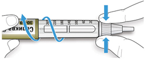 C. Выбросьте использованную иглу в резистентный к проколам контейнер (см. раздел "Утилизация шприц-ручки"). 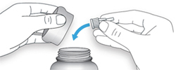 D. Закройте шприц-ручку ее колпачком.
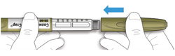 Срок использования
Как хранить шприц-ручку Перед первым использованием
После первого использования
Обращение со шприц-ручкой Обращайтесь со шприц-ручкой с осторожностью.
Предохраняйте шприц-ручку от попадания пыли и грязи
Утилизация шприц-ручки
Побочное действие
Наиболее частыми нежелательными реакциями (НР) во время лечения препаратом Соликва СолоСтар® являлись гипогликемия и НР со стороны желудочно-кишечного тракта (см. раздел "Описание отдельных нежелательных реакций" ниже). НР, связанные с применением препарата и наблюдавшиеся в ходе клинических исследований, представлены по системно-органным классам в порядке убывания частоты их развития очень часто (≥10%); часто (≥1%; <10%); нечасто (≥ 0.1%; <1%); редко (≥ 0.01%; <0.1%); очень редко ( <0.01%), частота неизвестна (определить частоту встречаемости НР по имеющимся данным не представляется возможным).
Описание отдельных НР Гипогликемия Эпизоды тяжелой гипогликемии, особенно, если они возникают повторно, могут привести к развитию неврологических нарушений. Случаи длительной или тяжелой гипогликемии могут представлять угрозу для жизни. У многих пациентов признакам и симптомам нейрогликопении - недостатка глюкозы в головном мозге (чувство усталости, неадекватная утомляемость или слабость, снижение способности к концентрации внимания, сонливость, зрительные расстройства, головная боль, тошнота, спутанность или потеря сознания, судороги) предшествуют признаки адренергической контррегуляции (активации симпатической нервной системы в ответ на гипогликемию): чувство голода, раздражительность, нервное возбуждение или тремор, беспокойство, бледность, "холодный" пот, тахикардия, ощущение сердцебиения. В целом, чем значительнее и быстрее происходит снижение концентрации глюкозы крови, тем сильнее выражена адренергическая контррегуляция и ее проявления. Документированные гипогликемические НР, протекающие с клинической симптоматикой, или тяжелые гипогликемические НР
* Документированная, протекающая с клинической симптоматикой гипогликемия была эпизодом, во время которого типичные симптомы гипогликемии сочетались с установленной плазменной концентрацией глюкозы в крови ≤ 70 мг/дл (3.9 ммоль/л). ** Тяжелая, протекающая с клинической симптоматикой гипогликемия была эпизодом, потребовавшим помощи других людей для того, чтобы активно ввести углеводы, глюкагон или провести другие мероприятия, направленные на поддержание основных жизненных функций организма. Нарушения со стороны ЖКТ НР со стороны ЖКТ (тошнота, рвота и диарея) часто регистрировались во время лечения. У пациентов, получающих лечение препаратом Соликва СолоСтар®, частота случаев тошноты, диареи и рвоты, связанных с лечением, составляла 8.4%, 2.2% и 2.2% (в клинических исследованиях LixiLan-O и LixiLan-L) и 5.5%, 0.8% и 1.2% соответственно (в клиническом исследовании LixiLan-G). НР со стороны ЖКТ в основном были умеренно выраженными и преходящими. У пациентов, получавших лечение ликсисенатидом, частота тошноты, диареи и рвоты, связанных с лечением, составляла 22.3%, 3% и 3.9% соответственно. Нарушения со стороны иммунной системы Сообщалось о развитии аллергической реакции (крапивница), возможно связанной с применением препарата Соликва СолоСтар®, у 0.3% пациентов. Во время пострегистрационного применения инсулина гларгин и ликсисенатида наблюдались случаи генерализованных аллергических реакций, включая анафилактические реакции и ангионевротический отек. Иммуногенность (образование антител) Применение препарата Соликва СолоСтар® может привести к образованию антител к инсулину гларгин и/или ликсисенатиду (см. раздел "Особые указания"). После 30 недель лечения препаратом Соликва СолоСтар® в двух исследованиях фазы 3 (LixiLan-O и LixiLan-L) частота образования антител к инсулину гларгин составляла 21.0% и 26.2%. Примерно у 93% пациентов антитела к инсулину гларгин продемонстрировали перекрестную реактивность c человеческим инсулином. Частота образования антител к ликсисенатиду составляла приблизительно 43%. Наличие антител к инсулину гларгин и ликсисенатиду не оказывало клинически значимого влияния на безопасность или эффективность. В третьем клиническом исследовании 3 фазы (LixiLan-G) через 26 недель лечения у пациентов, получавших препарат Соликва СолоСтар®, частота формирования антител к инсулину гларгин и ликсисенатиду составляла 17.4% и 44.5% соответственно. Реакции в месте введения У некоторых пациентов (1.7%), получающих инсулинотерапию, включая препарат Соликва СолоСтар®, наблюдались эритема, локальный отек, зуд в месте инъекции. Эти явления обычно постепенно уменьшались и проходили без лечения. ЧСС При применении агонистов рецепторов ГПП1 сообщалось об увеличении ЧСС, а в некоторых исследованиях ликсисенатида также наблюдалось временное увеличение ЧСС. В плацебо-контролируемых клинических исследованиях III фазы было показано отсутствие повышения средних значений ЧСС. Липодистрофия П/к введение инъекционных препаратов, содержащих инсулин, может привести к развитию липоатрофии в месте инъекции (уменьшения подкожно-жировой ткани) или липогипертрофии (повышения плотности тканей). С целью уменьшения риска развития липодистрофии место инъекций следует менять при каждой новой инъекции в пределах одной из рекомендуемых областей (см. раздел "Режим дозирования".) Противопоказания
С осторожностью
Применение при беременности и кормлении грудью
Беременность Отсутствуют данные контролируемых клинических исследований по применению в период беременности препарата Соликва СолоСтар®, инсулина гларгин или ликсисенатида. В исследованиях на животных была продемонстрирована репродуктивная токсичность ликсисенатида; отсутствие эмбриотоксичности и тератогенности инсулина гларгин. Потенциальный риск для человека неизвестен. Препарат Соликва СолоСтар® противопоказан при беременности (из-за содержания в составе препарата ликсисенатида). При планировании беременности или ее наступлении лечение препаратом Соликва СолоСтар® следует прекратить. Период грудного вскармливания Нет данных о проникновении в грудное молоко человека инсулина гларгин или ликсисенатида. Применение препарата Соликва СолоСтар® в период грудного вскармливания противопоказано. Фертильность Исследования, проведенные на животных с инсулином гларгин и ликсисенатидом, не показали их непосредственного неблагоприятного воздействия на фертильность. Особые указания
Препарат Соликва СолоСтар® противопоказан у пациентов с сахарным диабетом 1 типа или для лечения кетоацидоза. Гипогликемия Гипогликемия является наиболее частой нежелательной реакцией во время лечения препаратом Соликва СолоСтар®. Гипогликемия может наблюдаться, если доза препарата Соликва СолоСтар® выше, чем потребность в нем. Факторы, повышающие предрасположенность к гипогликемии, требуют тщательного мониторинга и могут потребовать коррекцию режима дозирования. К этим факторам относятся:
При одновременном применении ликсисенатида и/или инсулина с производными сульфонилмочевины повышен риск развития гипогликемии, в связи с чем, препарат Соликва СолоСтар® не следует применять в сочетании с препаратами сульфонилмочевины. Пролонгированное действие введенного п/к инсулина гларгин может замедлить выход пациента из состояния гипогликемии. Дозу препарату Соликва СолоСтар® следует подбирать индивидуально по клиническому эффекту и титроваться, исходя из потребности пациента в инсулине (см. раздел "Режим дозирования"). Острый панкреатит Применение агонистов рецепторов ГПП1 связано с риском развития острого панкреатита. Зарегистрировано несколько случаев острого панкреатита при применении ликсисенатида, хотя не было установлено причинно-следственной взаимосвязи между ними. Пациенты должны быть проинформированы о характерных симптомах панкреатита: длительно сохраняющиеся (персистирующие) сильные боли в животе. При подозрении на панкреатит применение препарата Соликва СолоСтар® следует прекратить. При подтверждении диагноз острого панкреатита, не следует возобновлять лечение препаратом Соликва СолоСтар®. Препарат Соликва СолоСтар® следует применять с осторожностью у пациентов с панкреатитом в анамнезе. Применение у пациентов с тяжелым заболеваниями ЖКТ Применение агонистов рецепторов ГПП1 может быть связано с развитием НР со стороны ЖКТ. Препарат Соликва СолоСтар® не изучался у пациентов с тяжелыми заболеваниями ЖКТ, включая тяжелый гастропарез, и поэтому применение препарата Соликва СолоСтар® у данных пациентов противопоказано. Почечная недостаточность тяжелой степени Отсутствует терапевтический опыт применения препарата у пациентов с почечной недостаточностью тяжелой степени (КК менее 30 мл/мин) или с терминальной стадией почечной недостаточности. Применение препарата противопоказано у пациентов с почечной недостаточностью тяжелой степени (КК менее 30 мл/мин) или терминальной почечной недостаточностью. Одновременное применение лекарственных препаратов Замедление опорожнения желудка ликсисенатидом может замедлять скорость абсорбции лекарственных препаратов, принимаемых внутрь. Препарат Соликва СолоСтар® следует применять с осторожностью у пациентов, принимающих внутрь лекарственные препараты, которые требуют быстрого всасывания в желудочно-кишечном тракте, требуют тщательного клинического контроля или имеют узкий терапевтический индекс (см. раздел "Лекарственное взаимодействие"). Дегидратация Пациентов, получающих лечение препаратом Соликва СолоСтар®, следует информировать о потенциальном риске дегидратации в связи с развитием НР со стороны ЖКТ и о соблюдении мер предосторожности во избежание потери жидкости. Образование антител Применение препарата Соликва СолоСтар® может вызывать образование антител к инсулину гларгин и/или ликсисенатиду. В редких случаях наличие таких антител может потребовать изменения дозы препарата Соликва СолоСтар® с целью коррекции тенденции к развитию гипер- или гипогликемии. Предотвращение ошибок при введении препарата Пациенты должны быть проинструктированы о необходимости всегда проверять этикетку шприц-ручки перед каждым введением препарата, чтобы избежать случайного перепутывания между собой двух шприц-ручек Соликва СолоСтар®, имеющих различные концентрации действующих веществ, или перепутывания с другими шприц-ручками с другими инъекционными противодиабетическими препаратами. Для того чтобы избежать ошибок дозирования препарата и передозировки, пациенты и медицинские работники никогда не должны использовать шприц для извлечения препарата из картриджа предварительно заполненной шприц-ручки Соликва СолоСтар®. Дополнительная информация Не изучалось одновременное применение препарата Соликва СолоСтар® с ингибиторами дипептидилпептидазы IV, производными сульфонилмочевины, глинидами, пиоглитазоном. Вспомогательные вещества Препарат Соликва СолоСтар® содержит метакрезол, который может вызывать развитие аллергических реакций. Влияние на способность к управлению транспортными средствами и механизмами Способность пациента к концентрации внимания и его реакция могут быть нарушены в результате развития гипогликемии или гипергликемии, или в результате нарушения зрения. Это может представлять риск в ситуациях, когда эти способности имеют особое значение (например, при управлении транспортными средствами или работе с механизмами). Пациентам следует рекомендовать принимать меры предосторожности для того, чтобы избежать развития гипогликемии во время управления транспортными средствами. Это особенно важно у тех пациентов, у которых ослаблено или отсутствует распознавание симптомов, предвещающих развитие гипогликемии, или у пациентов с частыми эпизодами гипогликемии. В таких случаях должен быть рассмотрен вопрос о целесообразности управления транспортными средствами или механизмами. Передозировка
Симптомы: имеются ограниченные клинические данные в отношении передозировки препарата Соликва СолоСтар®. Возможно развитие гипогликемии НР со стороны ЖКТ в случае превышения требуемой дозы препарата Соликва СолоСтар®. Лечение: эпизоды гипогликемии легкой степени выраженности обычно могут купироваться приемом легкоусвояемых углеводов внутрь. Может потребоваться коррекция дозы препарата, диеты или интенсивности физической нагрузки. Более тяжелые эпизоды гипогликемии, вплоть до развития комы, судорог или неврологических нарушений могут купироваться внутримышечным/подкожным введением глюкагона или в/в введением концентрированного раствора декстрозы (глюкозы). Может потребоваться длительный прием углеводов и наблюдение врача, т.к. после видимого клинического улучшения возможен рецидив гипогликемии. В зависимости от клинических проявлений и симптомов следует начать терапию, поддерживающую основные жизненные функции, а доза препарата Соликва СолоСтар® должна быть снижена до предписанной пациенту дозы. Лекарственное взаимодействие
Исследования по взаимодействию препарата Соликва СолоСтар® с другими лекарственными средствами не проводились. Инсулин гларгин Ряд лекарственных средств влияет на метаболизм глюкозы, вследствие чего при их одновременном применении с инсулином может потребоваться коррекция дозы инсулина и особенно тщательное наблюдение, включая мониторинг концентрации глюкозы в крови.
Помимо этого, под воздействием симпатолитических лекарственных средств, таких как бета-адреноблокаторы, клонидин, гуанетидин и резерпин, признаки адренергической контррегуляции (активации симпатической нервной системы в ответ на гипогликемию) могут быть менее выражены или отсутствовать. Ликсисенатид Ликсисенатид является пептидом и не метаболизируется с помощью изоферментов системы цитохрома P450. В исследованиях in vitro ликсисенатид не влиял на активность протестированных изоферментов системы цитохрома P450 или транспортеров у человека. Влияние задержки опорожнения желудка на абсорбцию принимаемых внутрь лекарственных препаратов Задержка опорожнения желудка при применении ликсисенатида может уменьшить скорость абсорбции лекарственных препаратов, принимаемых внутрь. Следует соблюдать осторожность при одновременном приеме внутрь лекарственных препаратов с узким терапевтическим диапазоном или требующих тщательного клинического мониторинга. Если такие препараты следует принимать во время еды, пациентам следует рекомендовать их прием с тем приемом пищи, когда не вводится ликсисенатид. Лекарственные препараты для приема внутрь, эффективность которых особенно зависит от пороговых концентраций, такие как антибиотики, следует принимать не менее чем за 1 ч до или через 4 ч после инъекции препарата Соликва СолоСтар®. Гастрорезистентные препараты следует принимать не менее чем за 1 ч до или через 4 ч после инъекции препарата Соликва СолоСтар®. С парацетамолом Коррекции доза парацетамола при одновременном применении с препаратом Соликва СолоСтар® не требуется, однако в случае необходимости быстрого начала действия парацетамола, его следует принимать через 1-4 ч после инъекции препарата Соликва СолоСтар® в виду возможного увеличения Tmax парацетамола в плазме крови. С пероральными контрацептивными препаратами Пациенткам, применяющим пероральные контрацептивные препараты, следует рекомендовать принимать не менее чем за 1 ч до или через 11 ч после инъекции препарата Соликва СолоСтар®. С аторвастатином Пациентам, принимающим аторвастатин, следует рекомендовать его прием не менее чем за 1 ч до или через 11 ч после инъекции препарата Соликва СолоСтар®. С варфарином Коррекции дозы варфарина при его совместном применении с препаратом Соликва СолоСтар® не требуется, однако рекомендуется частый мониторинг МНО в начале и после окончания терапии препаратом Соликва СолоСтар®. С дигоксином Коррекции дозы дигоксина при его совместном применении с препаратом Соликва СолоСтар® не требуется. С рамиприлом Коррекции дозы рамиприла при его совместном применении с препаратом Соликва СолоСтар® не требуется. |
||||||||||||||||||||||||||||||||||||||||||||||||||||||||||||||||||||||||||||||||||||||||||||||||||||||||||||||||||||||||||||||||||||||||||||||||||||||||||
Вернуться наверх |
||||||||||||||||||||||||||||||||||||||||||||||||||||||||||||||||||||||||||||||||||||||||||||||||||||||||||||||||||||||||||||||||||||||||||||||||||||||||||
Copyright © Справочник Видаль «Лекарственные препараты в России», Москва, Россия